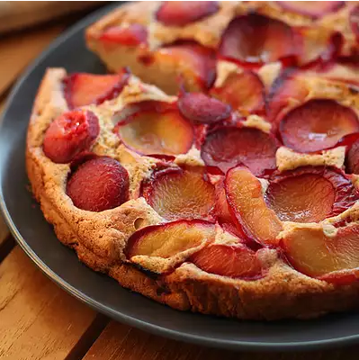

Plum Cake

Description
Sweet and juicy plums make the perfect main ingredient for impressive cakes. Ripe from May through October, they make
for splendid summer and early fall baking.
Ingredients
- 3 eggs
- ½ cup butter, softened
- ½ cup white sugar
- 1 teaspoon lemon zest
- 1 cup all-purpose flour
- ½ teaspoon baking powder
- 1 cup plums, pitted and quartered
Steps
- Preheat oven to 375 degrees F (190 degrees C). Grease and flour one 9-inch tube pan.
- Separate the eggs. In a small bowl, beat the egg whites until stiff peaks form, and set aside.
- In a large bowl, cream the butter and sugar. Beat in the egg yolks and the lemon zest.
- Stir together the flour and baking powder and then blend the flour mixture into the creamed mixture. Gently fold
in the egg whites. Spread the batter evenly into the prepared pan. There will only be a little over an inch of
batter. Arrange the plums, skin side down, attractively over the batter.
- Bake in preheated oven until a tester inserted in the center comes out clean, about 40 minutes. Transfer to a
cooling rack and allow to cool before serving.